Tema 8. NAT e IPv6¶
En el Tema 7 vimos un puntero a NAT. Aquí profundizamos: RFC 1918, NAT/PAT completo y la transición a IPv6 (formato, tipos de dirección y coexistencia con IPv4).
Primera clase
Empieza por el cuestionario inicial. No hace falta estudiar el tema completo antes: el cuestionario sirve para ver qué sabes al empezar.
Propuesta didáctica¶
Trabajamos los RA4 y RA5 del módulo Redes de área local (0225), con apoyo de RA1:
RA4. Instala equipos en red, describiendo sus prestaciones y aplicando técnicas de montaje.
RA5. Mantiene una red local interpretando recomendaciones de los fabricantes de hardware o software y estableciendo la relación entre disfunciones y sus causas.
RA1. Reconoce la estructura de redes locales cableadas analizando las características de entornos de aplicación y describiendo la funcionalidad de sus componentes.
Criterios de evaluación (selección)¶
RA4
- CE4g: Se han identificado los protocolos.
- CE4h: Se han configurado los parámetros básicos.
RA5
- CE5a: Se han identificado incidencias y comportamientos anómalos.
- CE5b: Se ha identificado si la disfunción es debida al hardware o al software.
- CE5d: Se han verificado los protocolos de comunicaciones.
- CE5e: Se ha localizado la causa de la disfunción.
- CE5h: Se ha elaborado un informe de incidencias.
RA1 (apoyo)
- CE1a: Se han descrito los principios de funcionamiento de las redes locales.
- CE1c: Se han descrito los elementos de la red local y su función.
VLAN
Las VLAN (CE4j) no se desarrollan en este tema.
Contenidos¶
- Direcciones IPv4 privadas (RFC 1918) y necesidad del NAT.
- NAT: concepto, enmascaramiento; terminología local/global e interna/externa.
- NAT estático, dinámico y PAT (puertos y tabla de traducción).
- Límites del NAT y relación con IPv6.
- IPv6: 128 bits, abreviatura, prefijos (
/64,/48…). - Unicast, anycast, multicast; direcciones especiales.
- Coexistencia: pila dual, túneles, traducción (NAT-PT y afines).
Programación de aula (orientativa, ~14–16 h)¶
| Sesiones | Contenidos | Actividades |
|---|---|---|
| 1 | Presentación + cuestionario | Cuestionario |
| 2–3 | RFC 1918, idea de NAT, terminología | AC801, AC802 |
| 4–5 | Estático, dinámico, PAT | AC803, AC804 |
| 6–8 | Laboratorio Packet Tracer NAT/PAT | PR801 |
| 9–11 | IPv6 formato, prefijos, tipos | AC805, AC806, AC807 |
| 12–13 | Coexistencia IPv4/IPv6; repaso | AC808 |
Cuestionario inicial¶
Antes de empezar — responde con lo que sepas
- ¿Por qué no basta con dar una IP pública a cada dispositivo del planeta?
- ¿Qué diferencia hay entre IP privada e IP pública?
- ¿Qué hace un router con NAT cuando un PC de la LAN visita una web?
- ¿Crees que sin NAT el agotamiento de IPv4 habría llegado antes?
- ¿Cuántos bits tiene una dirección IPv4 y cuántos una IPv6?
- ¿Para qué sirve la notación
::en una dirección IPv6?
Soluciones
Las soluciones se trabajan en clase o se publican en Aules cuando proceda.
Direcciones privadas y NAT¶
No hay suficientes IPv4 públicas para todos los dispositivos. Las LAN usan privadas (RFC 1918):
| Clase | Rango | Prefijo |
|---|---|---|
| A | 10.0.0.0 – 10.255.255.255 | 10.0.0.0/8 |
| B | 172.16.0.0 – 172.31.255.255 | 172.16.0.0/12 |
| C | 192.168.0.0 – 192.168.255.255 | 192.168.0.0/16 |
Las privadas no se enrutan en Internet tal cual: al salir hace falta traducir a una IP pública. Eso es NAT (Network Address Translation).
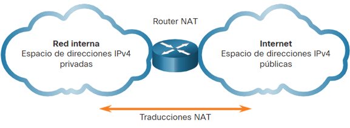
NAT ahorra IPv4 públicas y oculta las IP internas hacia fuera (no sustituye a un cortafuegos bien configurado). La solución a largo plazo al límite de IPv4 es IPv6.
Cómo funciona el NAT¶
Dentro: IP privadas. Hacia Internet: una o varias públicas del pool NAT. El dispositivo que traduce (casi siempre el router) reescribe direcciones en ambos sentidos.
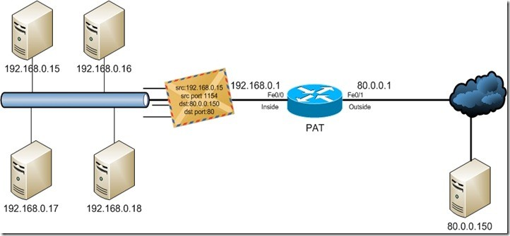
Terminología (local / global, interna / externa)¶
| Tipo | Idea sencilla |
|---|---|
| Local interna | IP privada del host dentro de la LAN |
| Global interna | IP pública que el router muestra hacia fuera por ese host |
| Local externa | Cómo el host interno ve al destino |
| Global externa | IP pública real del destino en Internet |
- Interna → el equipo traducido (origen típico en salidas).
- Externa → el destino (u otro no traducido por este NAT).
- Local → vista en el lado privado.
- Global → vista en el lado público.
Ejemplo: PC 192.168.10.10 (local interna) sale como 209.165.200.226 (global interna) hacia un servidor web público.
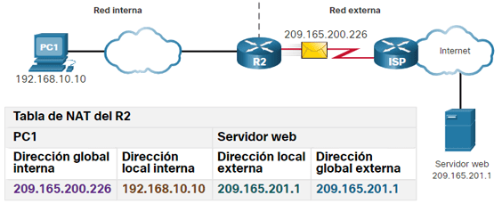
Tipos de NAT¶
- NAT estático — mapeo fijo 1:1.
- NAT dinámico — pool de públicas según demanda.
- PAT (Port Address Translation) o NAT con sobrecarga — muchas privadas, pocas/una pública + puertos.
NAT estático¶
Correspondencia fija privada ↔ pública. Útil para servidores alcanzables siempre con la misma pública (web en DMZ, SSH a una máquina…). Hace falta tantas públicas como mapeos 1:1 activos.
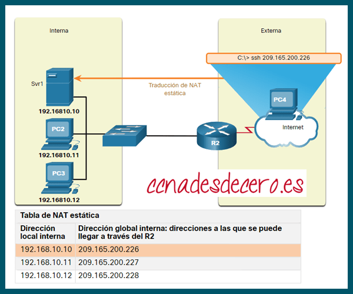
NAT dinámico¶
Un pool de públicas: al salir, el router asigna una libre. También limita cuántos hosts pueden salir a la vez según el tamaño del pool.
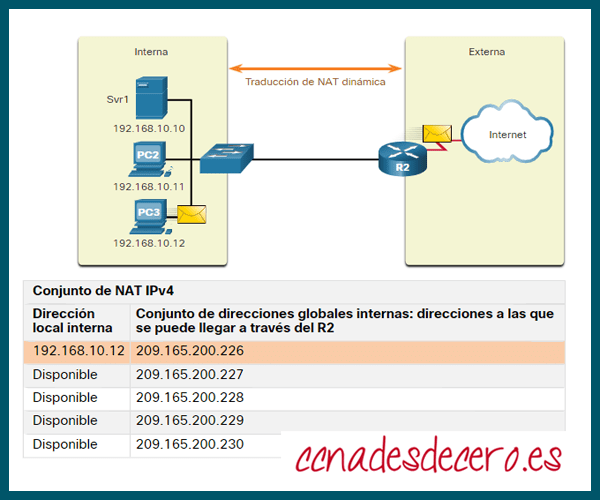
PAT (NAT con sobrecarga)¶
Traduce IP y puertos. Muchos hosts comparten una (o pocas) IP públicas; cada sesión se distingue por IP pública + puerto. Es lo habitual en el router de casa.
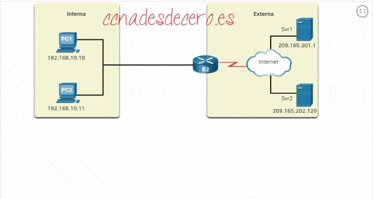
| NAT estático/dinámico “puro” | PAT | |
|---|---|---|
| Mapeo | 1 IP privada ↔ 1 pública (por host activo) | Muchos hosts ↔ 1 (o pocas) públicas |
| Traducción | Solo IPv4 | IPv4 y puertos TCP/UDP |
| Uso típico | Servicios fijos; varias públicas | Hogar, aulas, salida típica a Internet |
NAT y capa de transporte
Con PAT el router mira puertos (y estado) para devolver el tráfico a la sesión correcta. No lo convierte en un “switch de capa 4”, pero sí en algo más que un simple reenvío solo por IP.
Límites del NAT¶
- Complica aplicaciones que esperan IP pública extremo a extremo (algunos juegos, VoIP, P2P).
- Las conexiones iniciadas desde Internet hacia dentro suelen fallar sin mapeos/port forwarding.
- Añade estado y complejidad al borde.
- IPv6 reduce la necesidad del NAT “de masas” al ofrecer espacio de direcciones enorme.
Protocolo IPv6¶
IPv6 sustituye progresivamente a IPv4: direcciones de 128 bits frente a 32.
| Característica | IPv4 | IPv6 |
|---|---|---|
| Tamaño | 32 bits | 128 bits |
| Notación | Decimal punteada | Hexadecimal, 8 grupos de 16 bits |
| Direcciones ≈ | 2³² | 2¹²⁸ |
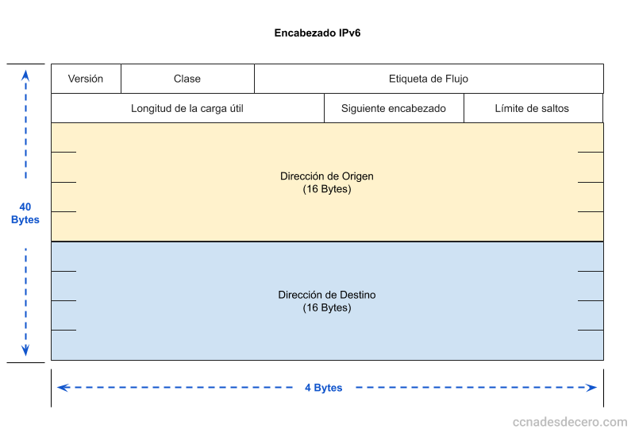
Formato y abreviatura¶
Ejemplo completo: 2001:0db8:3c4d:0015:0000:0000:1a2f:1a2b
- Quitar ceros a la izquierda en cada grupo.
- Sustituir una secuencia de grupos
0consecutivos por::(solo un::por dirección).
Ejemplos: FE00:0:0:1:0:0:0:56 → FE00:0:0:1::56.
Inválidas: FE00::1::56 (dos ::), hhhh::1 (no hex).
Prefijos¶
Como CIDR: dirección/n. El /64 es el tamaño típico de un enlace LAN.
| Prefijo | Uso típico |
|---|---|
/128 |
Una interfaz |
/64 |
Enlace / subred habitual |
/56 |
Bloque residencial frecuente |
/48 |
Bloque empresarial habitual |
/32 |
Asignación a ISP |
Estructura habitual: prefijo global + subred + ID de interfaz (64 bits).
Tipos de dirección IPv6¶
- Unicast: un destino.
- Anycast: misma dirección en varias interfaces; llega al “más cercano”.
- Multicast: un grupo de receptores.
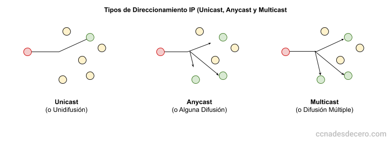
Las global unicast son las IPv6 “públicas” en Internet. Existen ULA (fc00::/7) con uso parecido a las privadas IPv4.
Especiales¶
- Loopback:
::1(como127.0.0.1). - Indefinida:
::/128. - Link-local: suelen empezar por
fe80:.
Coexistencia IPv4 / IPv6¶
Pila dual (dual stack)¶
El nodo habla IPv4 e IPv6 a la vez. Extendido y relativamente sencillo; duplica gestión.
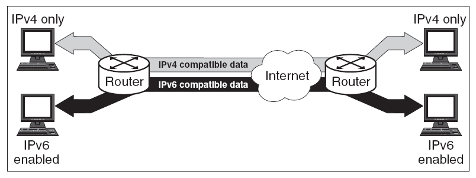
Túneles¶
Encapsulan IPv6 sobre infraestructura IPv4 (u otros diseños) para atravesar redes que aún no enrutan IPv6 nativo.
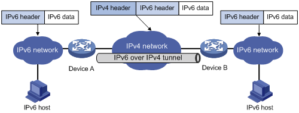
Traducción¶
Si un extremo solo IPv4 debe hablar con otro solo IPv6, hace falta un traductor. Ejemplo conceptual: NAT-PT (hay otras técnicas y relays).
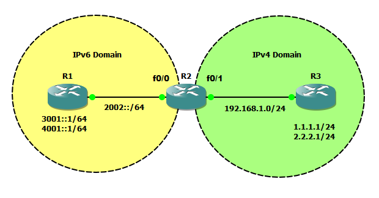
La transición es lenta: durante años convivirán ambas familias.
Actividades¶
Formato de entrega
Las entregas en Aules son obligatorias en Markdown (.md). No se aceptan PDF.
Nombre del archivo: AC8XX.md o PR8XX.md (sustituye XX por el número). Respeta la fecha de vencimiento.
Escribiremos los .md con Visual Studio Code.
Cómo empezar
- Guía de Markdown: tutorialmarkdown.com/guia
- Documentación de Visual Studio Code: code.visualstudio.com/docs
AC801 — IP privada frente a pública¶
- AC801. (RA1 // CE1a, CE1c // AC 0–1). Indica la IP de tu PC (aula/casa), máscara o prefijo y si es privada o pública. Si es privada, sitúala en RFC 1918. Explica por qué esas direcciones no se enrutan en Internet tal cual.
AC802 — Terminología NAT¶
- AC802. (RA4 // CE4g // AC 0–1). Con PC
192.168.1.20, router público203.0.113.50y servidor93.184.216.34, completa la tabla local interna / global interna / local externa / global externa. Identifica el “dispositivo traducido”.
AC803 — Tipos de NAT¶
- AC803. (RA4 // CE4g, CE4h // AC 0–1). Tabla: tipo (estático / dinámico / PAT), cuándo se usa y limitación principal (sobre todo, cuántas públicas hacen falta). Un ejemplo de aula o real por tipo.
AC804 — PAT y puertos¶
- AC804. (RA4 // CE4g // RA5 // CE5d // AC 0–1). Tres PCs en
192.168.0.0/24abren HTTP a la vez hacia el mismo servidor con el mismo puerto origen 49152. ¿Por qué no basta traducir solo la IP? ¿Qué añade el router a la tabla NAT?
AC805 — Abreviar IPv6¶
- AC805. (RA4 // CE4g // AC 0–1). Forma abreviada de: (1)
2001:0db8:00aa:0000:0000:0000:00cd:00ef; (2)fe80:0000:0000:0000:0202:b3ff:fe1e:8329; (3)fc00:0000:0000:0000:0000:0000:0000:0001. ¿Es válida2001:db8::1::2? ¿Por qué?
AC806 — Prefijo /64¶
- AC806. (RA4 // CE4h // AC 0–1). Dada
2001:db8:acad:1::100/64, escribe el prefijo de red en notación corta y la primera y última dirección del bloque en forma desarrollada.
AC807 — Unicast, anycast y multicast¶
- AC807. (RA1 // CE1a // RA4 // CE4g // AC 0–1). Define los tres tipos. Propón un caso de uso para multicast y uno para anycast.
AC808 — Pila dual frente a túnel¶
- AC808. (RA4 // CE4g // RA5 // CE5b // AC 0–1). Ventajas e inconvenientes de pila dual frente a un túnel IPv6-in-IPv4 en una sede con tránsito IPv4 hacia el ISP.
PR801 — Packet Tracer: NAT estático, dinámico y PAT¶
- PR801. (RA4 // CE4g, CE4h // RA5 // CE5b, CE5d, CE5h // RA1 // CE1a, CE1c // PR 0–10). Configura en Packet Tracer tres modos de NAT y verifica el resultado.
Escenario (resumen):
- Router R1 (LAN inside / WAN outside).
- LAN
192.168.10.0/24:PC-Admin,PC-Aula1,PC-Aula2,SRV-Interno. - WAN de laboratorio (p. ej.
209.165.200.224/27) con Server-Web externo. - Fases: A NAT estático → B NAT dinámico → C PAT.
Tareas:
- Direccionamiento y conectividad base (
ping). - Fase A: publica
SRV-Internocon pública fija; verifica conshow ip nat translations/show ip nat statistics. - Fase B: ACL + pool dinámico; comprueba cuántos hosts salen según el tamaño del pool.
- Fase C: PAT (overload) en la interfaz de salida; tráfico simultáneo desde los tres PCs; comprueba distinción por puerto.
- Captura en el informe:
show run | section nat,show access-lists, traducciones y estadísticas. Usaclear ip nat translation *entre fases si procede. - Conclusión: diferencia práctica de los tres modos; qué usarías para (a) publicar un servidor interno y (b) salida de aula con una sola pública.
El guion detallado y archivos .pkt se facilitarán en clase / Aules.
Entrega: PR801.md (+ capturas o salidas de verificación).
| Criterio | Descripción | Puntos |
|---|---|---|
| Conectividad base | Direccionamiento y ping correctos |
0–2 |
| NAT estático | Publicación y verificación | 0–2 |
| NAT dinámico | Pool, ACL y prueba | 0–2 |
| PAT | Sesiones distinguibles por puerto | 0–2 |
Informe .md |
Claridad, comandos y conclusiones | 0–2 |
| Total | /10 |
Referencias rápidas¶
- Sitio del módulo: fjavier-hernandez.github.io/ral
- Tema previo (transporte): Tema 7
- Simulación: Cisco Packet Tracer
- Entregas: Visual Studio Code + Markdown
- Normas: Normas del taller
- RFC 1918 (direccionamiento privado IPv4)